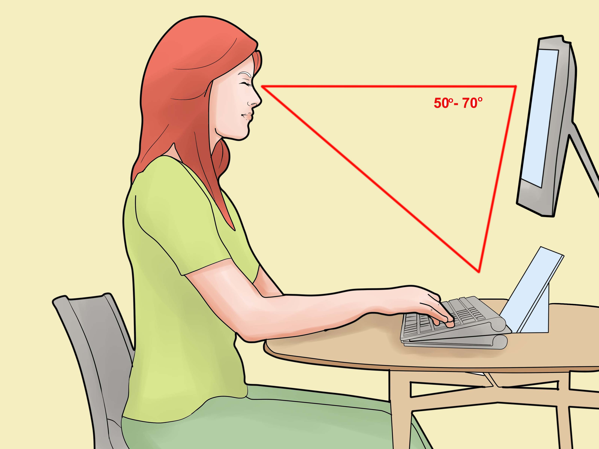

1 / 4

1) Place yourself approximately 1 meter from the screen. as shown above
2 / 4

2) If you have glasses for distance vision or glasses with progressive lenses, keep them on
<
3 / 4
3) Without pressing on the eyelid, cover your left/right eye with your hand.
4 / 4
4 Indicate which way the open side of the E is facing with your keyboard or mouse.
❯